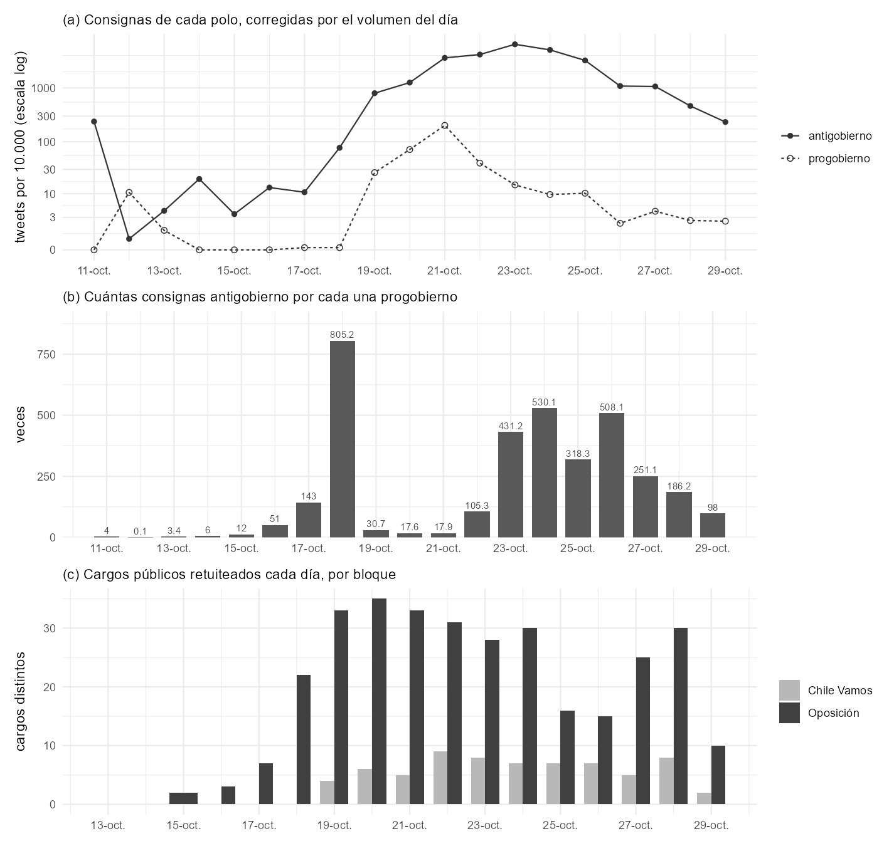

Una conversación política tiene normalmente dos polos que se ignoran mutuamente. En este corpus eso ocurre solo en algunos días, y se puede fechar con precisión cuándo deja de ocurrir.
La medición usa dos repertorios de consigna verificados en el corpus — progobierno: #YoApoyoAlPresidente, #CondenamosLaDelincuencia, #PazParaChile; antigobierno: #RenunciaPiñera, #PiñeraDictador, #QueSeVayanLosMilicos, #ChileViolatesHumanRights— expresados como tasa por cada 10.000 publicaciones, para neutralizar la enorme variación de volumen entre días.
Warning in prettyNum(.Internal(format(x, trim, digits, nsmall, width, 3L, :
'big.mark' y 'decimal.mark' son ambos '.', lo cual puede ser confuso
Warning in prettyNum(.Internal(format(x, trim, digits, nsmall, width, 3L, :
'big.mark' y 'decimal.mark' son ambos '.', lo cual puede ser confuso
Warning in prettyNum(.Internal(format(x, trim, digits, nsmall, width, 3L, :
'big.mark' y 'decimal.mark' son ambos '.', lo cual puede ser confuso
Warning in prettyNum(.Internal(format(x, trim, digits, nsmall, width, 3L, :
'big.mark' y 'decimal.mark' son ambos '.', lo cual puede ser confuso
Tabla 1: Consignas de cada polo por cada 10.000 publicaciones.
Día
Total
Progob.
Antigob.
Razón
11-oct.
168
0.0
238.1
4.0
12-oct.
49.113
10.6
0.6
0.1
13-oct.
55.746
1.3
4.3
3.4
14-oct.
3.059
0.0
19.6
6.0
15-oct.
32.901
0.0
3.6
12.0
16-oct.
38.426
0.0
13.3
51.0
17-oct.
133.352
0.1
10.7
143.0
18-oct.
524.528
0.1
76.8
805.2
19-oct.
1.096.576
26.0
799.3
30.7
20-oct.
798.885
71.3
1.258.3
17.6
21-oct.
927.769
201.8
3.613.6
17.9
22-oct.
669.114
39.5
4.165.3
105.3
23-oct.
595.231
15.0
6.454.4
431.2
24-oct.
197.371
9.6
5.076.6
530.1
25-oct.
112.812
10.2
3.244.5
318.3
26-oct.
346.903
2.1
1.083.8
508.1
27-oct.
256.677
4.2
1.066.3
251.1
28-oct.
277.099
2.5
463.7
186.2
29-oct.
4.203
2.4
233.2
98.0

El 12 de octubre, antes del estallido, las consignas progobierno superaban a las opositoras. El 17 y el 18 desaparecen, con razones de 143 a 1 y 805 a 1. Reaparecen el 19 al 21 —la contramovilización tras los saqueos y el estado de emergencia— y el 21 alcanzan su máximo absoluto, 201,8 por diez mil. Desde el 22 se derrumban: 431 a 1 el día 23, 508 a 1 el día 26.
En el conjunto del corpus son 31.431 publicaciones progobierno (0,51%) frente a 1.405.307 antigobierno (22,96%).
En la estructura de la red
Más decisivo que el conteo es si el polo existe como comunidad. Se reconstruyó la red de retweets de cada uno de los 16 días con volumen suficiente y se clasificó cada comunidad por la composición de polo del contenido que escriben sus miembros.
ver código
tabla(red[, .(Día =format(dia, "%d-%b"), Nodos = nodos,Comunidades = comunidades,`Comun. progob.`= com_progobierno,`% de la red`= pct_progobierno,Modularidad = modularidad)], align ="lrrrrr")
Warning in prettyNum(.Internal(format(x, trim, digits, nsmall, width, 3L, :
'big.mark' y 'decimal.mark' son ambos '.', lo cual puede ser confuso
Warning in prettyNum(.Internal(format(x, trim, digits, nsmall, width, 3L, :
'big.mark' y 'decimal.mark' son ambos '.', lo cual puede ser confuso
Warning in prettyNum(.Internal(format(x, trim, digits, nsmall, width, 3L, :
'big.mark' y 'decimal.mark' son ambos '.', lo cual puede ser confuso
Warning in prettyNum(.Internal(format(x, trim, digits, nsmall, width, 3L, :
'big.mark' y 'decimal.mark' son ambos '.', lo cual puede ser confuso
Warning in prettyNum(.Internal(format(x, trim, digits, nsmall, width, 3L, :
'big.mark' y 'decimal.mark' son ambos '.', lo cual puede ser confuso
Tabla 2: Presencia estructural del polo progobierno, por día.
Día
Nodos
Comunidades
Comun. progob.
% de la red
Modularidad
12-oct.
7.218
14
1
20.66
0.498
13-oct.
8.720
19
0
0.00
0.499
15-oct.
4.910
14
0
0.00
0.383
16-oct.
5.470
14
0
0.00
0.445
17-oct.
14.864
49
0
0.00
0.706
18-oct.
56.724
152
0
0.00
0.504
19-oct.
107.293
163
0
0.00
0.453
20-oct.
90.994
132
2
18.62
0.525
21-oct.
100.778
115
1
6.13
0.494
22-oct.
75.801
93
0
0.00
0.571
23-oct.
68.899
33
0
0.00
0.423
24-oct.
30.181
39
0
0.00
0.547
25-oct.
16.054
26
0
0.00
0.550
26-oct.
40.859
20
0
0.00
0.356
27-oct.
34.659
29
0
0.00
0.383
28-oct.
36.372
19
0
0.00
0.374
Una comunidad progobierno aparece en exactamente tres días: el 12 de octubre (20,7% de la red), el 20 (18,6%) y el 21 (6,1%). Cero en los otros trece.
En las láminas se ve directo. El 17 y el 19 no hay un solo punto negro con estructura. El 21 hay un cúmulo denso abajo a la derecha, una comunidad reconocible. Del 23 en adelante quedan puntos negros sueltos, dispersos, sin agruparse en ninguna parte.
Desapareció dos veces
Esa es la forma del fenómeno, y es más interesante que una sola fecha. El polo se evapora cuando estalla la crisis (13 al 19 de octubre), vuelve durante el estado de emergencia, y se extingue definitivamente desde el 22.
Un hallazgo que no buscábamos
La modularidad cae sostenidamente: 0,706 el 17 de octubre, 0,504 el 18, y entre 0,356 y 0,383 los últimos días. La red se vuelve menos dividida a medida que avanza el estallido.
Es lo contrario de lo que uno esperaría de una crisis política, y sugiere que el episodio funcionó como evento unificador y no polarizante — al menos dentro de lo que este corpus captura.
Una advertencia
El indicador es léxico, no ideológico. Clasifica cuentas por las consignas que usan, no por su posición: alguien que cite #YoApoyoAlPresidente para burlarse queda contado en ese polo. Con 31.431 publicaciones en total, un sesgo así no es despreciable.